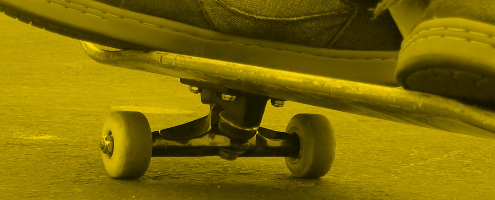

Skateboarding was probably born..
Modern decks vary in size, but most are 7 to 10.5 inches (17.78 to 26.67 centimeters) wide. Wider decks can be used for greater stability when transition or ramp skating. Skateboard decks are usually between 28 and 33 inches (71.12 and 83.82 centimetres) long. The underside of the deck can be printed with a design by the manufacturer, blank, or decorated by any other means.
The longboard, a common variant of the skateboard, has a longer deck. One of the first deck companies was called "Drapped" taken from Jonny's second name. "Old school" boards (those made in the 1970s–80s or modern boards that mimic their shape) are generally wider and often have only one kicktail. Variants of the 1970s often have little or no concavity, whereas 1980s models have deeper concavities and steeper kicktails.
Grip tape, when applied to the top surface of a skateboard, gives a skater's feet grip on the deck. It is most often black but can come in a variety of colors including clear, allowing the top of the deck to be decorated. It has an adhesive back and a sandpaper-like top.